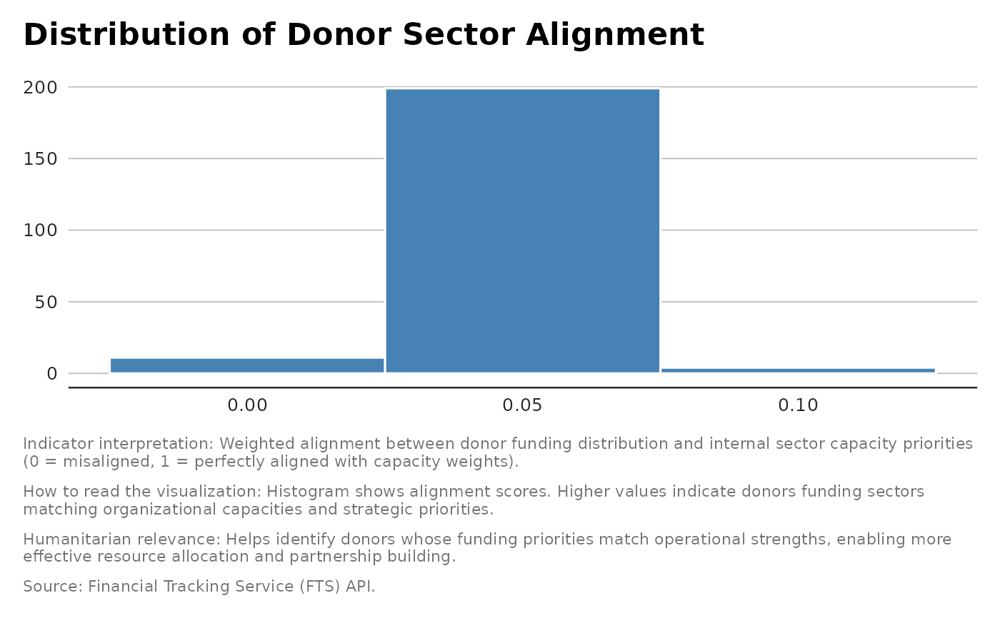

Sector Alignment
indicator_donor_sector_alignment.RdCalculates a weighted sector alignment index between donors and recipients, comparing donor funding per sector to internal capacity weights.
Details
Goal: evaluates how closely a donor’s funding distribution across humanitarian sectors matches the internal capacity or priority weighting of those sectors
Examples
flows |>
tidyr::unnest(destinationObjects, names_repair = "unique", names_sep = "_") |>
dplyr::filter(destinationObjects_type == "GlobalCluster") |>
dplyr::pull(destinationObjects_name) |>
unlist() |>
unique()
#> [1] "Nutrition"
#> [2] "Health"
#> [3] "Other"
#> [4] "Emergency Shelter and NFI"
#> [5] "Water Sanitation Hygiene"
#> [6] "Food Security"
#> [7] "Logistics"
#> [8] "Coordination and support services"
#> [9] "Protection - Gender-Based Violence"
#> [10] "Multi-sector"
#> [11] "Protection"
#> [12] "Education"
#> [13] "Early Recovery"
#> [14] "Protection - Child Protection"
#> [15] "Protection - Mine Action"
#> [16] "Agriculture"
#> [17] "Protection - Housing, Land and Property"
#> [18] "Camp Coordination / Management"
#> [19] "Protection - Human Trafficking & Smuggling"
#> [20] "Multipurpose Cash"
#> [21] "Emergency Telecommunications"
# pragmatic default weights - illustrative defaults emphasizing life-saving sectors
# (Nutrition, Health, WASH, Food Security) and cash/multi-sector where relevant.
library(tibble)
sectors <- c(
"Nutrition",
"Health",
"Emergency Shelter and NFI",
"Water Sanitation Hygiene",
"Food Security",
"Logistics",
"Protection - Gender-Based Violence",
"Protection - Child Protection",
"Protection",
"Multipurpose Cash",
"Education",
"Multi-sector",
"Protection - Housing, Land and Property",
"Protection - Human Trafficking & Smuggling",
"Coordination and support services",
"Camp Coordination / Management",
"Emergency Telecommunications",
"Agriculture",
"Early Recovery",
"Protection - Mine Action",
"Other"
)
# Adjusted scores based on funding collapse and operational risk
adjusted_scores <- c(
10, # Nutrition: Life-saving and first-line response; malnutrition spikes in
#crises. Funding collapse means ration cuts, so priority remains highest.
9, # Health: Essential for survival; clinics reverting to 1990s models
#(minimal staff, basic meds). High priority to prevent mortality.
8, # Emergency Shelter and NFI: Critical for displaced populations;
#exposure risk rises with underfunding. Still high but slightly below health/nutrition.
8, # Water Sanitation Hygiene (WASH): Prevents disease outbreaks;
#cholera risk escalates when systems fail. Needs strong prioritization.
7, # Food Security: Linked to nutrition but broader (agriculture, livelihoods).
#Funding gaps mean rationing; still vital but slightly less than direct nutrition.
6, # Logistics: Backbone for all sectors; underfunding reduces supply chain
#resilience. Important but not life-saving on its own.
7, # Protection - Gender-Based Violence: GBV spikes in fragile contexts;
#services often first to be cut. Needs strong prioritization for dignity and safety.
6, # Protection - Child Protection: Critical for safeguarding vulnerable
#children; funding collapse risks exploitation. Medium-high priority.
5, # Protection (general): Important for rights and safety but less
#immediately life-saving than GBV or child protection.
9, # Multipurpose Cash: Severely underfunded (only ~20% coverage);
#key for dignity and flexibility. High priority to maintain household resilience.
8, # Education: Collapsing (21% funded); long-term impact on recovery
#and protection. Elevated priority despite being non-life-saving.
6, # Multi-sector: Coordination across sectors matters, but direct impact
# is less urgent than core life-saving interventions.
4, # Protection - Housing, Land and Property: Important for durable
#solutions, but less urgent during acute collapse.
4, # Protection - Human Trafficking & Smuggling: Serious risk but narrower
#scope; medium-low priority compared to GBV/child protection.
3, # Coordination and support services: Necessary for system functioning,
# but deprioritized when survival sectors collapse.
3, # Camp Coordination / Management: Important for organized response,
#but less critical than food, health, WASH.
3, # Emergency Telecommunications: Enables operations but not directly
#life-saving; deprioritized under severe funding constraints.
5, # Agriculture: Supports food security and recovery; medium priority
#as immediate needs dominate.
8, # Early Recovery: Only 17% funded; crucial for resilience and
#preventing protracted crises. Elevated priority despite systemic collapse.
2, # Protection - Mine Action: Important for safety but less urgent
# than health/nutrition during acute funding collapse.
1 # Other: Catch-all category; lowest priority given resource scarcity.
)
sector_capacity <- tibble::tibble(
sector = sectors,
raw_score = adjusted_scores) |>
dplyr::mutate(
capacity_weight = raw_score / sum(raw_score) # normalize to sum to 1
) |>
dplyr::select(sector, capacity_weight)
knitr::kable(sector_capacity |> dplyr::arrange(desc(capacity_weight)))
#>
#>
#> |sector | capacity_weight|
#> |:------------------------------------------|---------------:|
#> |Nutrition | 0.0819672|
#> |Health | 0.0737705|
#> |Multipurpose Cash | 0.0737705|
#> |Emergency Shelter and NFI | 0.0655738|
#> |Water Sanitation Hygiene | 0.0655738|
#> |Education | 0.0655738|
#> |Early Recovery | 0.0655738|
#> |Food Security | 0.0573770|
#> |Protection - Gender-Based Violence | 0.0573770|
#> |Logistics | 0.0491803|
#> |Protection - Child Protection | 0.0491803|
#> |Multi-sector | 0.0491803|
#> |Protection | 0.0409836|
#> |Agriculture | 0.0409836|
#> |Protection - Housing, Land and Property | 0.0327869|
#> |Protection - Human Trafficking & Smuggling | 0.0327869|
#> |Coordination and support services | 0.0245902|
#> |Camp Coordination / Management | 0.0245902|
#> |Emergency Telecommunications | 0.0245902|
#> |Protection - Mine Action | 0.0163934|
#> |Other | 0.0081967|
donors <- indicator_donor_sector_alignment(flows, sector_capacity)
#table(donor$Sector_Alignment )
library(ggplot2)
ggplot(donors, aes(x =Sector_Alignment )) +
geom_histogram(binwidth = 0.05, fill = "steelblue", color = "white") +
unhcrthemes::theme_unhcr(grid = "Y", axis = "X", axis_title = FALSE) +
labs(
title = "Distribution of Donor Sector Alignment",
x = "",
y = "Number of Destination",
caption = paste(
"Indicator interpretation:",
"Weighted alignment between donor funding distribution and internal sector
capacity priorities (0 = misaligned, 1 = perfectly aligned with
capacity weights).", "\n\n",
"How to read the visualization:",
"Histogram shows alignment scores. Higher values indicate donors funding
sectors matching organizational capacities and strategic priorities.",
"\n\n",
"Humanitarian relevance:",
"Helps identify donors whose funding priorities match operational strengths,
enabling more effective resource allocation and partnership building.",
"\n\n",
"Source: Financial Tracking Service (FTS) API."
)
)
